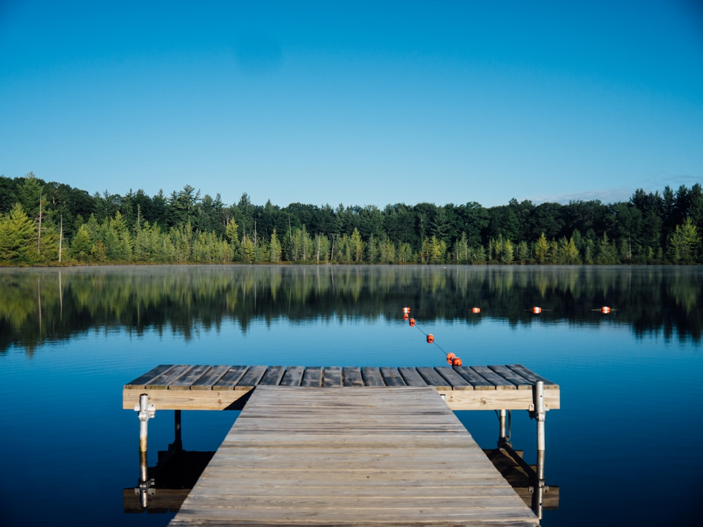

Understanding water conservation is crucial for our planet's future. Every day, billions of gallons of water are wasted through inefficient practices, leaky infrastructure, and lack of awareness.
By educating ourselves and others about sustainable water practices, we can make a significant impact on preserving this vital resource for future generations.
Learn how your daily choices affect water consumption and discover practical ways to reduce your water footprint while maintaining your quality of life.